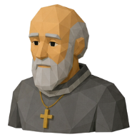
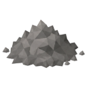

⚱️
The Quiet Ossuary
With the graveyard at peace, Father Aldous wants a reliquary for the chapel, so the bones of the fallen are offered the moment they fall. Blessing it takes offerings from beyond Ashvale.
| Property | Value |
|---|---|
| Quest giver |  Father Aldous |
| Zone | 🌾 Ashvale |
| Quest points | 2 |
| Requirements | ✝️ Prayer 20 👻 Bones of Ashvale |
Objectives
- Hand in
 Big Bones ×25
Big Bones ×25 - Hand in

Ashes ×10